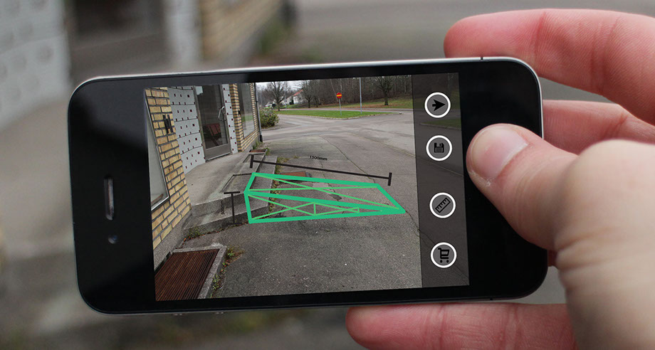

Back

ROLL
Roll är ett augmented reality projekt, skapad till en fiktiv designbyrå specialiserad på att utveckla hjälpmedel till funktionsnedsatta. Applikationens är ett hjälpmedel för dem mindre händiga eller de mer effektiva som behöver bygger en ramp anpassad till rullstolar. Genom att rikta telefonens kamera mot den plats som rampen ska placeras, kommer appen rita en blueprint av en funktionell ramp med korrekt mått och ge användaren en visuell syn av hur rampen kommer se ut efter färdig konstruktion.
Roll är ett individuellt projekt där jag har utvecklat alla konceptet, wireframe, mocups och presentation.